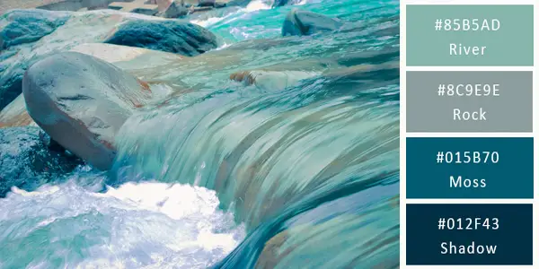
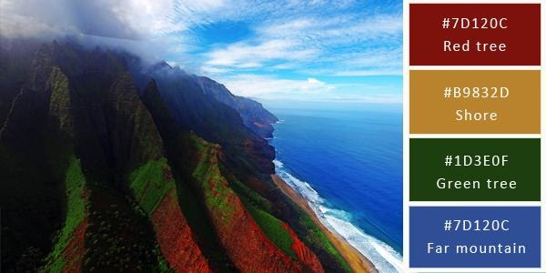

Si tu también quieres aprender a programar, te recomiendo tomar el Curso grátis de Programación Básica de Platzi, el cual te mostrara las bases de como hacerlo.
En MDN Web Docs puedes encontrar diversos artículos y tutoriales para expandir tus conocimientos en esta área. Dicha página está desarrollada por Mozilla, responsable del navegador web Firefox.
¿Te ha interesado el contenido de alguna de estas páginas, o ya habías oído hablar de ellas?
Las siguientes imagenes muestran los colores elegidos para este sitio, con su respectivo código hexagecimal.
 